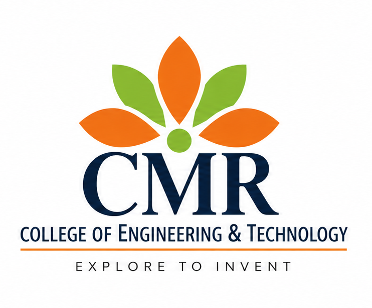
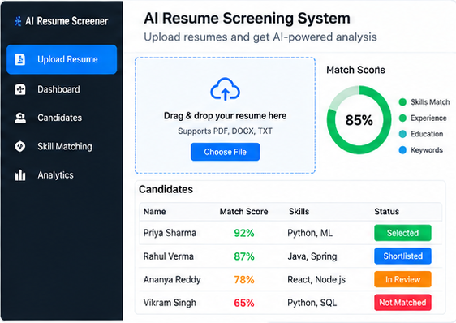
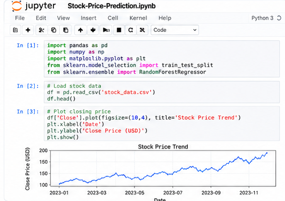
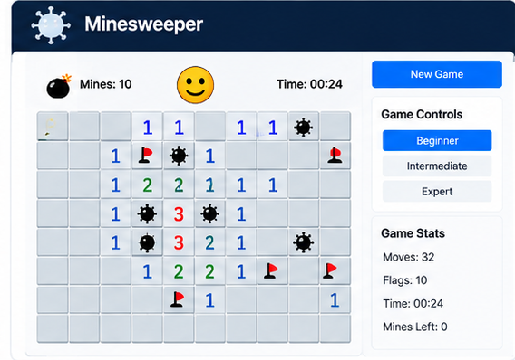
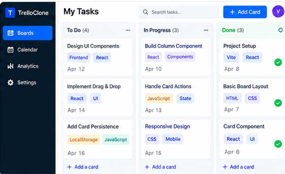
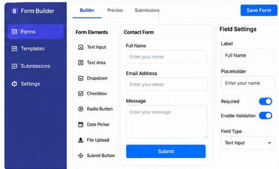
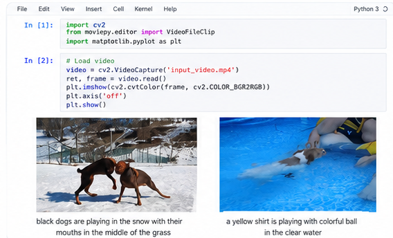

Languages
Python · Java · JavaScript · TypeScript · SQL
Software Developer creating scalable APIs, modern web experiences, and intelligent cloud solutions with Python, React, FastAPI, AWS, and Azure.
Years of software development experience
Building practical solutions across financial services, healthcare, and enterprise platforms.I'm a software developer focused on Python, FastAPI, React, cloud-native systems, and AI-enabled applications. My work includes credit-risk services, contract intelligence workflows, and enterprise learning platforms.
I enjoy designing reliable backends, intuitive interfaces, and automation that makes everyday work easier.
Access Resume ↗Python · Java · JavaScript · TypeScript · SQL
React.js · Angular · HTML · CSS · Chakra UI
FastAPI · Django · Flask · Spring Boot · REST · GraphQL
AWS · Azure · Docker · Kubernetes · Terraform · CI/CD
PostgreSQL · DynamoDB · MongoDB · Airflow
OpenAI API · LLM workflows · PyTest · Selenium
Credit Risk — OneCredit Exposure Management
PACE & Clinical AI Platforms
Sales Training Portal
University of the Cumberlands
Wilmington University

CMR College of Engineering and Technology
Explore projects from my GitHub portfolio.

AI-powered resume analysis and screening
View on GitHub ↗
Machine learning and financial forecasting
View on GitHub ↗
Interactive logic-based browser game
View on GitHub ↗
Kanban-style task management interface
View on GitHub ↗
Configurable forms and frontend UI
View on GitHub ↗
Digital video handling and processing
View on GitHub ↗“Keep learning. Keep building. Make every line of code count.”
Interested in collaborating or discussing a software engineering opportunity? I'd love to connect.